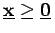
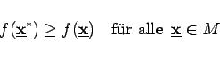

Inhalt Index DeskTop Bronstein

 Optimierung Lineare Optimierung Problemstellung und geometrische Darstellung Formen der linearen Optimierung
Optimierung Lineare Optimierung Problemstellung und geometrische Darstellung Formen der linearen Optimierung


Die Menge aller nichtnegativen Vektoren , die allen Nebenbedingungen genügen, bilden den zulässigen Bereich M:
Ein Punkt  mit der Eigenschaft
mit der Eigenschaft
|  | (18.6b) |
heißt Maximalpunkt oder Lösungspunkt des linearen Optimierungsproblems.